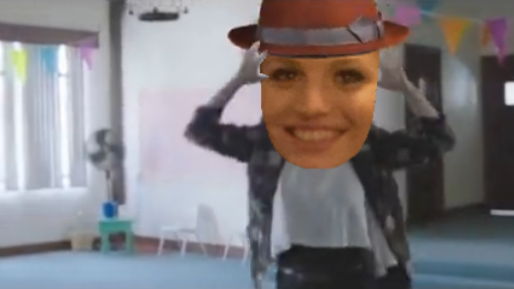
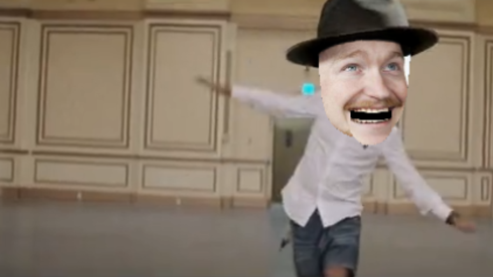

The band Scuurvy is a group of teachers from the Nashville Software School. They decided classroom teaching wasn't enough. They wanted even more than John Wark had envisioned when he started Nashville Software School in 2012. The band formed in 2020 after being inspired by their favorite cohort, Cohort 11. Their favorite group of students, Scuurvy, influenced the teachers to take their show on the road forming the band named after their group. The band Scuurvy has been on tour between cohort classes allowing them to reach larger audiences and become famous rock stars.